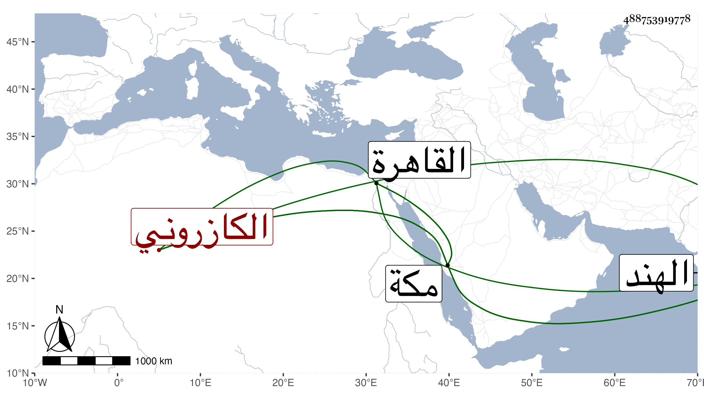

0902Sakhawi.DawLamic.ITO20230111-ara1.EIS1600.488753919778
Biography ID: 488753919778
249
محمد بن عبد الله بن محمد مظفر الدين بن حميد الدين بن سعد الدين الكازروني نزيل مكة . برع في فنون وتصدى للإقراء بمكة فقرأ عليه القطب وحاشيته للسيد الفخر أبو بكر بن ظهيرة وكذا قرأ على قاضي الحنابلة بمكة والشهاب بن خبطة وأقرأ غير ذلك كالطب ، وقدم القاهرة في سنة سبعين ونوزع في دعاويه وتكلم معه الكافياجي وغيره وعقد له مجلس وما أنصف ولم يلبث أن رجع ومات ، وبالغ ابن الأسيوطي في تقبيحه ووصفه بالمبتدع الرافضي الفلسفي وأنه قد غلبت عليه العلوم الفلسفية حتى أخرجته عن سنن السنة المرضية وأدته إلى الرفض وبغض الصحابة رضوان الله عليهم ثم إلى اللعب بالقرآن والقول فيه بالرأي وتنزيله على قواعد الفلسفة وشرح كائنته كما كتبتها في مظفر من الكبير . وقال النجم بن فهد : كانت له يد في الطب والمنطق والفلسفة عار من الشرعيات بالكلية لا يحسن من الفقه شيئا وله نظم كالأعاحم ويمكث الأيام المتطاولة يحاول إنشاء رسالة أو نحوها ولا يأتي بشيء ، كل ذلك مع كونه ضنينا بنفسه متحسرا على عدم تعظيم الأطباء ببلاد العرب لكونهم في بلاده كما زعم يحكمون على قضاة القضاة سيما وكاتب السر غالبا لا يكون إلا منهم . ودخل الهند ودام بها حتى مات مسموما فيما قيل .
